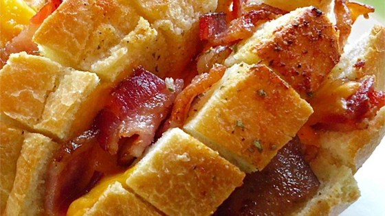
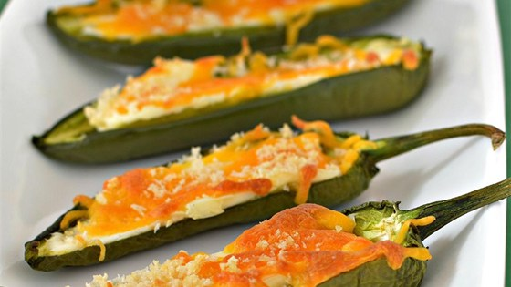
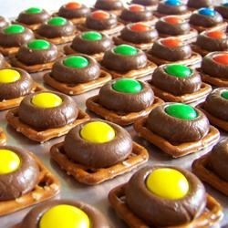

| Ingredients |
Directions |
| 4 cloves garlic, crushed |
Combine garlic, butter, and oil in a microwave safe dish or in a small saucepan. |
| 2 tablespoons butter |
Toast split bread under broiler. Remove bread when it is toasted golden brown in color. |
| 2 tablespoons extra-virgin olive oil |
Sprinkle cheese on the bread |
| 1 loaf crusty bread, split |
Sprinkle parsley on bread |
| 3 tablespoons grated cheese, Parmigiano or Romano, optional |
| Chopped fresh parsley |

| Ingredients |
Directions |
| 3 slices bacon |
Preheat oven to 350 degrees F (175 degrees C). |
| 1 (1 pound) loaf round sourdough bread |
Place bacon in a large skillet and cook over medium heat, turning occasionally, until halfway cooked, about 5 minutes. Drain the bacon slices on paper towels; cut crosswise into 1/2-inch wide strips. |
| (1 ounce) slices Cheddar cheese, or more as needed |
Cut slits halfway through bread in two directions creating a checkerboard pattern. Slip Cheddar cheese slices and bacon pieces into the slits. |
| 1/2 cup butter, melted |
Mix butter and ranch dressing mix together in a small bowl; pour over bread, allowing to drip into the slits. Wrap entire loaf in a sheet of aluminum foil and place on a baking sheet. |
| 1 tablespoon dry ranch dressing mix |
Bake in the preheated oven for 15 minutes. Unwrap bread and return to baking sheet; bake until cheese is melted and bacon is crisp, about 10 more minutes. |

| Ingredients |
Directions |
| cooking spray |
Preheat oven to 400 degrees F (200 degrees C). Spray a baking sheet with cooking spray. |
| 12 jalapeno peppers, halved lengthwise and seeded |
Fill each jalapeno pepper half with cream cheese, Cheddar cheese, and bread crumbs, respectively, and arrange peppers on the prepared baking sheet. |
| 2 ounces cream cheese, softened |
Bake in the preheated oven until jalapenos are tender and cheese melts, about 20 minutes. |
| 2 ounces shredded Cheddar cheese |
| 1/4 cup panko bread crumbs |

| Ingredients |
Directions |
| 1/2 cup popcorn kernels |
Combine popcorn kernels and oil in a deep pot over high heat and place a cover on the pot. Cook the popcorn, frequently shaking the pot to move the kernels, until the sound of kernels popping slows to nearly a stop, about 7 minutes. Carefully pour popcorn into a large mixing bowl. Sprinkle lime zest and salt over the popcorn. |
| 1 lime, zested and juiced |
Whisk lime juice, melted butter, and sriracha sauce together in a bowl; drizzle over popcorn and toss to coat. |
| 1/2 teaspoon salt |
| 1 tablespoon unsalted butter, melted |
| 1 tablespoon sriracha sauce |